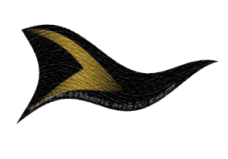
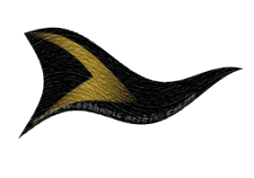

|

|
Das schwarze Brett
|
|
| Übersicht,
Anschläge und Stammtisch (RPG) |
|
Die finale Entschuldigun
|
Kurator
   |
Wertes Scherbenvolk, liebe Bürger, liebe Adlige, werte Könige und Königinnen,
schweren Herzens trete ich nun vor Euch, es liegt mir gleich Blei auf meinem Herzen - und kratzt doch an dem restlichen kleine Gewissen das mir noch auf meine Tage verblieben ist.
Lange habe ich die richtigen worte gesucht, es tausende male in Gedanken durchgegangen, wie ich es wohl formuliere, an den Sätzen geschliffen, die richtigen Wörter gesucht, deren Bedeutungen abgewogen.
Doch all die Wortklauberei hat keinen wirklichen Sinn, es geht doch um die Essenz einer Entschuldigung. Die Essenz wie ich es in die Herzen der Adressaten bringe, dass sie es verstehen, dass sie beim erstem mal lesen verstehen dass es aus tiefsten Herzen kommt und voller Ehrlicher überzeugung ist.
Doch genug Gerede und Geschreibe, last mich es Aussprechen:
Ich entschuldige mich dafür, dass sich hier am Anschlagbrett in letzter Zeit so viele entschuldigen.
So, endlich ist es raus - ich fühle mich doch gleich viel besser!
Danke für Eure Geduld.
Sir Kurator
Zur 19. Stunde am 80.Erntemond im Jahre 434 |
05.09.08 20:47
 |
|
Zorra
  |
Ich moechte diese finale Entschuldigung entschuldigen.
Lady Schattentanz,
Anführerin der glorreichen Nation "S.T.U.R.M.",
Ehefrau des ehrenwerten Steppenstreuner,
Herz der Steppe
Zur 17. Stunde am 83.Erntemond im Jahre 434 |
06.09.08 13:07
|
|
Grace
 |
Ist mir auch peinlich ! Entschuldigung...
Lady Grace Ti Annuan
Zur 21. Stunde am 83.Erntemond im Jahre 434 |
06.09.08 14:02
|
|
| mínaí tinnu (RIP) |
Ich hingegen finde, es ist das schönste und niedlichste, was ich in den letzten Monaten lesen durfte...
Es gelang mir sogar, darüber zu lachen ~ obwohl man dieses Geräusch momentan bei mir überhaupt nicht vernehmen kann...
Habt meinen Dank, ehrenwerter Sir Kurator
Urvan mit Euch
~ m ~
Baronesse mínaí tinnu,
Vorsteherin von Cirith Elegys,
Anführerin der glorreichen Nation "Phönixgarde",
Inhaberin des ersten Schneiderstübchens,
Hüterin des Schildes des Vhenvâr Silwen
Zur 4. Stunde am 84.Erntemond im Jahre 434 |
06.09.08 15:38
|
|
| Hrogar Bierbrauer (RIP) |
Ich hatte schon Angst, die Baronesse Minai Tinnu hätte diesen Anschlag übersehen, um ihre "werte" Meinung dazu kund zu tun. Beinahe hätte ich ihr eine Taube zukommen lassen, damit sie sich auch auf diesem Anschlag verewigen kann.
Hrogar Bierbrauer,
Priester im Dienste des einzig wahren Glaubens an Urvan
Zur 9. Stunde am 84.Erntemond im Jahre 434 |
06.09.08 16:49
|
|
Grace
|
Sie hatte einfach keine Lust sich dafür zu entschuldigen , dass sie wieder die erste ist , welche ihren Senf dazu geben musste..
oder *grübelt*.. muss ich mich entschuldigen , eher hier gewesen zu sein ?
*vorsichthalber entschuldigt* Entschuldigt!
Lady Grace Ti Annuan
Zur 11. Stunde am 84.Erntemond im Jahre 434 |
06.09.08 17:09
|
|
Zorra
|
Oh oh... Grace Ti Annuan hat recht. Ich entschuldige mich auch fuer meinen abgebebenen Senf.
Da faellt mir ein. Hat hier wer eine Bratwurst? Ich habe noch mehr Senf.
Lady Schattentanz,
Anführerin der glorreichen Nation "S.T.U.R.M.",
Ehefrau des ehrenwerten Steppenstreuner,
Herz der Steppe
Zur 11. Stunde am 84.Erntemond im Jahre 434 |
06.09.08 17:11
|
|
| mínaí tinnu (RIP) |
Direkt erquicklich, wie man sich doch um mich sorgt, oder sollte ich doch eher sagen, es ned erwarten kann, weitere Peinlichkeiten von mir zu erblicken?
Ich erfreue mich, zu erkennen das eben ihr es wart, unüberlegt diese spottenden Zeilen zu entsenden um mich du defamieren.. Doch Eurer Lacher wird nur kurz weilen...
Eure Taube hätte mir sicher gut gemundet, da ich mich sicher nicht vom fremden Pöbel anschreiben lasse ~ gerade wenn er auch noch das *Leid* hat, der Gattung *Mann* anzugehören.
Aber ich gebe Euch Recht ~ die Anschläge sind hier derart rar geworden.
Wenn dann mal ein Anschlag erscheint, derart nichtssagen, dass es natürlich Sinn macht diesen Anschläge mit weitaus geringeren Ausagen oben halten zu müssen, um einer kleinen Elf ~ welche zu schnell an Titel und Ruhm gelangt ist ~ in ihre Schranken zu weisen... muss man natürlich reagieren...
Wisst ihr was, Hrogar Bierbrauer? Nein ihr wisst es nicht ~ und ihr würdet niemals zugeben es wissen zu wollen, doch Zwerge sind nicht nur garstig, sondern auch neugierig...
Daher werd ich Euer Wissen gern stillen ~ mir ist es eh gleich, und verzeiht in voraus das meine Worte sich vielleicht, oder sogar gewiss ~ nein überhaupt nicht der Wortwahl einer Baronesse ziemen...:
Ich scheiss so ziemlich darauf, ob man sich an mir festbeisst, weil ich es wagte ~ mich eben genau 2x über diese neue Mode zu äussern - jeden Scherbenbewohner mit dem ach so kleinem Zipperlein zuzuscheissen... Eine Entschuldigung wie sie ein Tatars schreiben *lässt*,damit man vor seinen Stadttoren abzieht ~ Entschuldigungen den Feinden gegenüber *bitte bitte nehmt doch diese schreckliche rote Taube von mir...*
Ja, Worte sind schnell geschrieben... wegen meiner ~ der Eine oder Andere schreibt es nicht mal selbst ~ aber : hach so scheiss egal - ich sag mal *tut mir leid* und sofort wird mir alles verziehen... Da frage ich mich, warum ich so niedrig behandelt wurde, mit einer ehrlichen Seele ausgestattet worden zu sein...
Die Frau die man liebt verlangt *schreib es Öffentlich* und der Narr tut es... Egal ob er so denkt, oder ob es für ihn eine Qual ist ~ man hat die befriedigt wie man sollte und kann nun erwarten das man sich wieder in die Arme nimmt...
Der Nationsführer lacht ne Andere Nation aus - aber er sagt halt öffentlich *bitte, bitte* und schwupst haben sich alle wieder lieb ~
Immer wieder das Gleiche Bild! Der Stärkere *verlangt* das sich der Schwächere zum Nuckel macht ~ vor Aller Augen ~ doch all diese Augen können damit überhaupt nichts anfangen ~ aber egal, der Schwache hat es gesagt und gut ist ~ war es ehrlich ~ laut lacht- wie kann man das nur denken? natürlich denkt man weiterhin *ist das ein §$%$§% ~ krepieren möge er ... und so weiter
und eben genau davon bin ich gelangweilt und könnte speien - weil es auch Wesen gibt, die sich vielleich aus tiefsten Herzen entschuldigen möchten ~ was dann jedoch an all den Schwachsinn untergeht..
Auch ich habe eine Person, die ich anbete, vergöttere, jeden Tag eher sterben als leben will ~ nicht weiss wo ich mich zuerste entschuldigen soll, wie ich es auch nur erreichen kann das er mit mir redet ... doch wähle ich diesen *billigen* Weg?
Nein ~ denn auch wenn ich allen sagen würde, wie sehr ich diesen Mann liebe, seine Zwillinge austrage und ich mich nach dem Tode sehne ~ ich mach es mit ihm allein aus und hoffe auf Antworten, die doch nie kommen werden ~ aber ich mach dies ned zu einer öffentlichen Schlacht...
*legt arg ermüdet die Feder zur Seite
Baronesse mínaí tinnu,
Vorsteherin von Cirith Elegys,
Anführerin der glorreichen Nation "Phönixgarde",
Inhaberin des ersten Schneiderstübchens,
Hüterin des Schildes des Vhenvâr Silwen
Zur 12. Stunde am 84.Erntemond im Jahre 434 |
06.09.08 17:27
|
|
| mínaí tinnu (RIP) |
Aber, um diesen Beitrag doch noch etwas ehrliches abzugewinnen, ziehe ich nun auch noch meine Robe aus... um meiner Theorie absorsurdum zu führen...
Du musst wissen ~ es gab nur dich, und es wird stets nur dich geben1 So oft hast du nicht geantwortet und gut, ich lerne damit zu Leben, doch der Saatmond rückt näher...ohne Deine Hilfe schaff ich es nicht....
möge sich nun jeder daran erfreunen, dass ich nicht die Grosskotzige bin, die sich an leid anderer verübt - ich schliess hier nun ab - war nie meine Baustelle - nur vielleicht mal so ein Gedankenstoss
Baronesse mínaí tinnu,
Vorsteherin von Cirith Elegys,
Anführerin der glorreichen Nation "Phönixgarde",
Inhaberin des ersten Schneiderstübchens,
Hüterin des Schildes des Vhenvâr Silwen
Zur 13. Stunde am 84.Erntemond im Jahre 434 |
06.09.08 17:39
|
|
| Hrogar Bierbrauer (RIP) |
erstens bin ich kein Mann, sondern ein Zwerg *grinst*, denn Zwerge sind geschlechtsresistent. Sieht man daran, das alle Zwerge Bärte haben.
Zweitens war mir schon bewusst, das Ihr keine Ahnung davon habt, wie der gesittete Umgang mit anderen Scherbenbürgern funktioniert.
Ich hörte von älteren Freunden, die schon lange auf der Scherbe verweilen mal von einer Frau.... Sie war Anführerin einer Nation namens Phönixgarde, wollte Zeit ihres Lebens nur die unbeliebteste Frau der Scherbe werden durch ihr grosses Mundwerk und hiess Minuil Amarth.
Seid Ihr vielleicht die Reinkarnation dieser grossmäuligen Dame? Scheint mir jedenfalls so, denn dadurch, das Ihr meint, jeder müsse erfahren was Ihr denkt, da Ihr ja den ganzen Tag nur auf dem marktplatz rumschleicht. Und immer schön im Bereich des Anschlagplatzes.
Und, liebe Adlige, dies ist bereits der dritte Anschlag dieser Art, in dem Ihr Euch verewigt. Grade von einer Adligen hätte ich erwartet, das sie bis drei zählen kann.
So gehabt Euch wohl, badet in Eurem Selbstmitleid einer Verlassenen und seid etwas entspannter im Umgang und der Einschätzung anderer Rassen. Macht sich wirklich gut, und Ihr werdet merken, das Euch nicht nur Spott entgegnet wird, wenn man merkt, das man Euch durchaus ernst nehmen kann, weil es nicht nur Schwachsinn, Hohn und Häme ist, was Eure Feder zu Papier bringt.
Hrogar Bierbrauer,
Priester im Dienste des einzig wahren Glaubens an Urvan
Zur 17. Stunde am 84.Erntemond im Jahre 434 |
06.09.08 18:32
|
|
| mínaí tinnu (RIP) |
Oh Ihr Heileiger, der ihr mehr wisst als ale Propheten und Hohepriester dieser Scherbe der alles weiss und doch so sehr falsch liegt. Ihr langweilt mich ~ ebenso wie dies weiter zu diskutieren...
Die Sieben mit Euch....
~ m +
Baronesse mínaí tinnu,
Vorsteherin von Cirith Elegys,
Anführerin der glorreichen Nation "Phönixgarde",
Inhaberin des ersten Schneiderstübchens,
Hüterin des Schildes des Vhenvâr Silwen
Zur 23. Stunde am 84.Erntemond im Jahre 434 |
06.09.08 20:09
|
|
Übersicht,
Anschläge und Stammtisch (RPG)
|
|
|
|